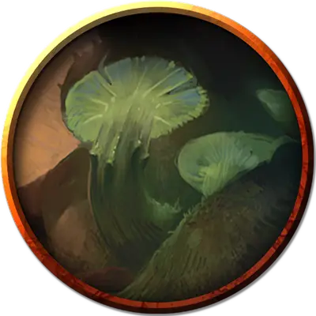

Камергер Заггтмой
Chamberlain of Zuggtmoy
Большое Растение, хаотично-злое, именной НИП

Класс Доспеха 13 (природный доспех)
Хиты 45 (6к10 + 12)
Скорость 20 футов
| мод | спас | ||
|---|---|---|---|
| СИЛ | 17 | +3 | +3 |
| ЛОВ | 7 | −2 | −2 |
| ТЕЛ | 14 | +2 | +2 |
| мод | спас | ||
|---|---|---|---|
| ИНТ | 11 | +0 | +0 |
| МДР | 8 | −1 | −1 |
| ХАР | 12 | +1 | +1 |
Сопротивление урону дробящий, колющий
Чувства тёмное зрение 60 футов, пассивное Восприятие 9
Языки Бездны, Подземный
Опасность 2 (450 опыта)
Бонус мастерства +2
Особенности
Грибной портал. Камергер считается грибом для особенности Грибной путь подружки невесты Заггтмой.
Ядовитые споры. Каждый раз, когда камергер получает урон, он выпускает облако спор. Существа, находящиеся в пределах 5 футов от камергера, должны совершить успешный спасбросок Телосложения Сл 12 или будут отравлены на 1 минуту.
Действия
Мультиатака. Камергер совершает две атаки ударом.
Удар. . Рукопашная атака оружием: +5 к попаданию, досягаемость 5 фт., одна цель. Попадание: Дробящий урон 10 (2к6 + 3).
Заразные споры (1 раз в день). Миконид распространяет споры, образующие облако в форме сферы радиусом 10 футов, с центром на нем, и оно существует в течение минуты. Любое существо из плоти и крови, находящиеся в облаке при его появлении, или входящие в его позднее, должны совершить спасбросок Телосложения Сл 12. При успешном спасброске существо не может быть заражено этими спорами в течение следующих 24 часов. При провале спасброска существо заражается болезнью «споры Заггтмой» а также получает случайную форму постоянного безумия (определяется броском по таблице Безумие Заггтмой в приложении D), оканчивающегося только в том случае, если существо излечивается от болезни или умирает. Будучи зараженным таким образом, существо не может быть заражено повторно и должно повторять спасбросок в конце каждых суток, оканчивая действие инфекции при успехе. При провале, над телом существа постепенно обретают контроль растущие в нем грибы, и после трех провалов спасброска существо умирает, а затем оживает споровым слугой, если оно относится к тому типу существ, которые могут быть споровыми слугами (см. раздел «Микониды»).
Описание
Камергер Заггтмой выглядит как бесформенная двуногая масса голубой плесени с некоторым подобием лица, проглядывающегося через заросли мха. Он избивает своих врагов своими замшелыми кулаками